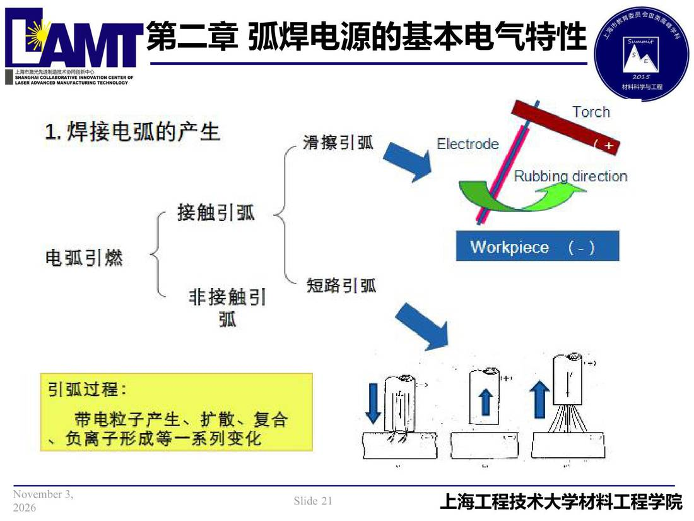

02 第2章 基本电气特性/p021 1. 焊接电弧产生
p021 1. 焊接电弧产生
📄 原文：📄 弧焊电源 课件（PDF 第 21 页）（幻灯片 21/273；PDF 第 21 页）
1. 焊接电弧产生

讲义原文
本页在课件中是纯图文版式（无文字层），内容以页图与下面的 OCR 文本为准。
页面文字（OCR 机读，可能有错字，以页图为准）
- 焊接电弧产生 滑擦引弧 接触引弧 电弧引燃 短路引弧 非接触引 引弧过程： 带电粒子产生、扩散、复合 、负离子形成等一系列变化